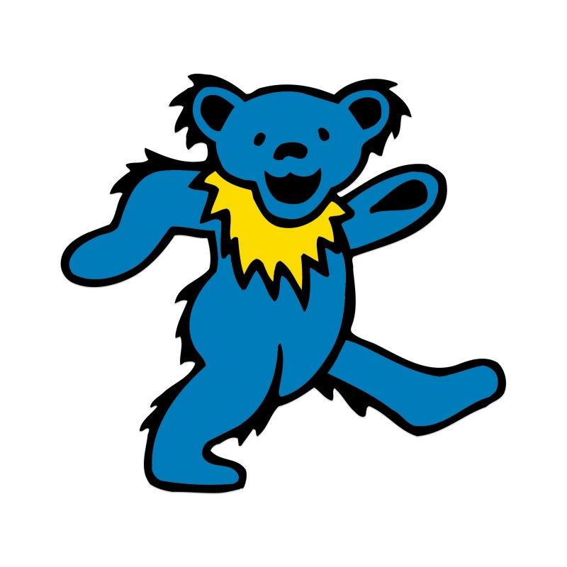

Your #1 spot for Grateful Dead data since 2022.
About
The Grateful Dead was an American rock band formed in 1965 in Palo Alto, California. The band is known for its eclectic style, which fused elements of rock, folk, country, jazz, bluegrass, blues, rock and roll, gospel, reggae, world music, and psychedelia; for live performances of lengthy instrumental jams that typically incorporated modal and tonal improvisation; and for its devoted fan base, known as "Deadheads". "Their music", writes Lenny Kaye, "touches on ground that most other groups don't even know exists." These various influences were distilled into a diverse and psychedelic whole that made the Grateful Dead "the pioneering Godfathers of the jam band world".